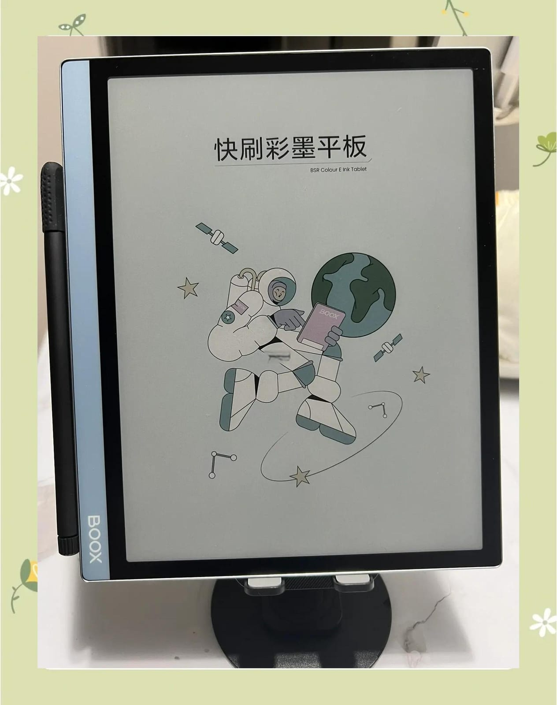

文石 Tab10C Pro 彩色墨水屏平板

文石 Tab10C Pro 用 Kaleido 3 彩色墨水屏兼顾护眼与彩色内容，自研快刷技术让滑动与视频接近流畅。开放安卓系统可装各类应用，支持手写笔记与 PDF 批注，兼顾阅读、办公与护眼平板需求，是墨水屏进阶旗舰。
客观评测
Tab10C Pro 采用 10.3 英寸 Kaleido 3 彩色电子纸，黑白约 300ppi、彩色约 150ppi（约数），彩色显示以柔和的杂志风呈现，饱和度与刷新率不及 LCD。文石自研快刷技术通过多种刷新模式改善滑动与动态内容，观感在墨水屏中属第一梯队但仍会有残影。开放安卓系统支持安装各类阅读与办公应用，4096 级压感手写笔（约数）支持笔记与 PDF 批注。硬件配置、开放生态在墨水屏平板中领先，代价是约四五千元的售价与墨水屏固有的动态局限。
主观点评
它是“护眼党”的终极答案之一：看彩色漫画、批 PDF、写会议笔记都在一块不刺眼的屏上完成，眼睛疲劳感显著低于 LCD 平板。快刷让它能凑合刷刷网页，但别指望看视频。价格确实肉疼，彩墨细腻度也要放低期待。若你每天大量阅读与批注、又对眼睛格外珍惜，它值得投资。
优点与不足
- Kaleido 3 彩色墨水屏兼顾护眼与彩色图表
- 快刷技术滑动与翻页接近流畅
- 开放安卓加手写笔，阅读笔记办公全能
- 彩色约 150ppi，色彩与细腻度不及 LCD
- 近五千元售价高昂
- 墨水屏仍不适合视频娱乐，快刷有残影
参数规格
| 屏幕 | 10.3 英寸 Kaleido 3 彩色墨水屏 |
|---|---|
| 分辨率 | 黑白约 2480×1860（300ppi），彩色约 150ppi |
| 刷新 | 自研快刷技术，多种刷新模式 |
| CPU | 高性能处理器（具体型号以官方为准） |
| 内存 | 约 6GB+128GB（以销售版本为准） |
| 系统 | 安卓开放系统，可安装第三方应用 |
| 手写 | 支持 4096 级压感手写笔（约数） |
| 前光 | 冷暖双色温前光 |
| 电池 | 大容量电池，续航视使用而定 |
| 接口 | USB-C，支持 OTG（约数） |
| 连接 | Wi-Fi、蓝牙 |
| 适用 | 阅读、PDF 批注、笔记、护眼办公 |